| Tier | Character | ||||
|---|---|---|---|---|---|
| S | 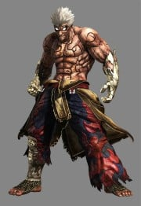 | 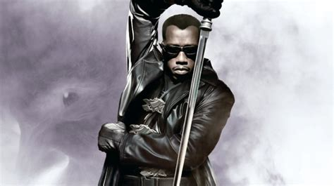 | 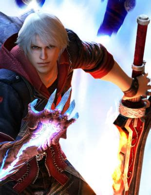 | 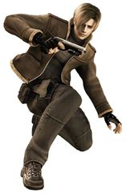 | 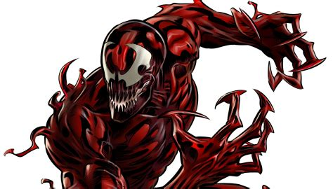 |
| A | 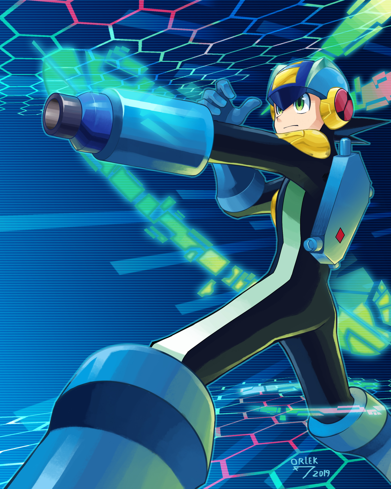 | 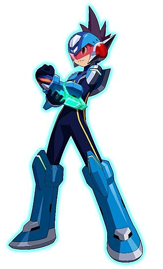 | 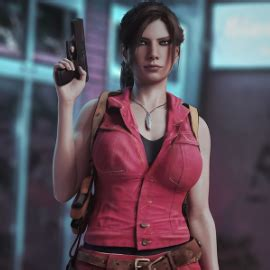 | 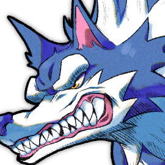 | 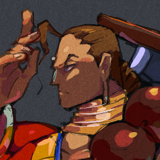 |
| B |  |
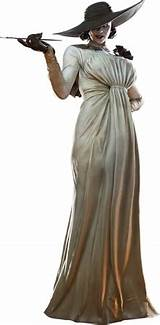 | 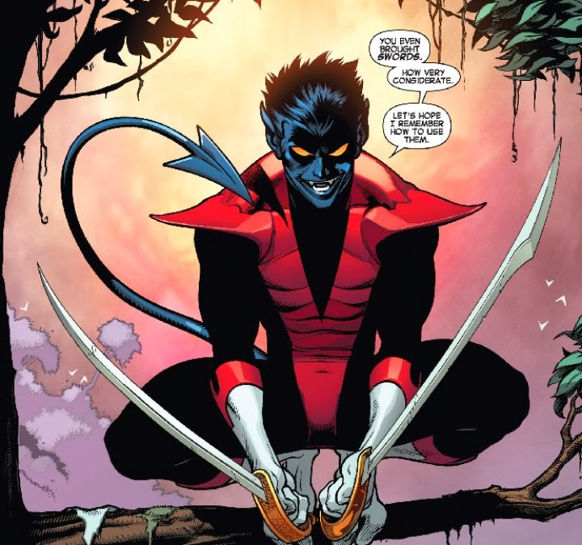 | 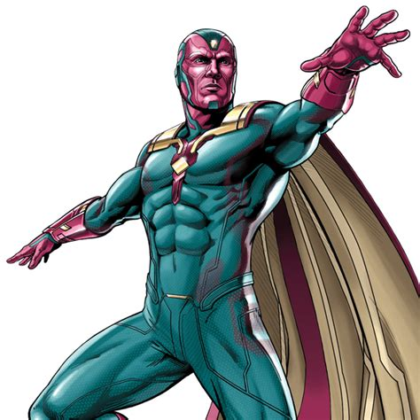 | 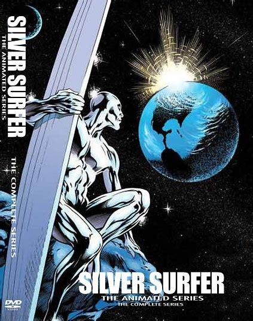 |
| C | 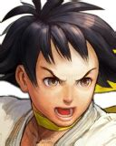 | 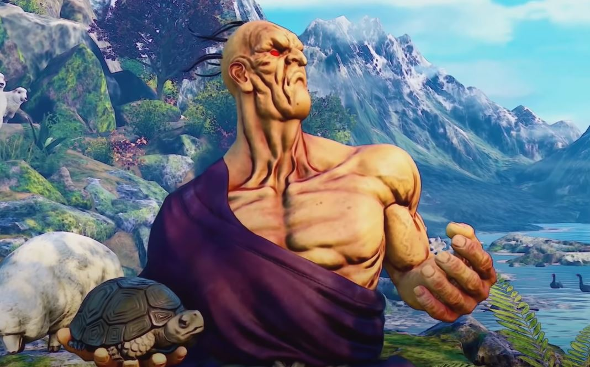 | 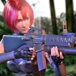 | 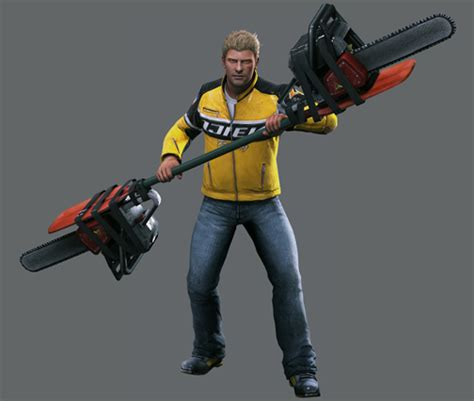 | 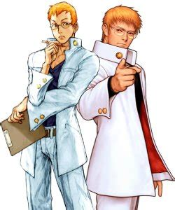 |
| D | 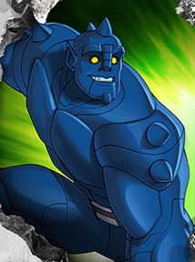 | 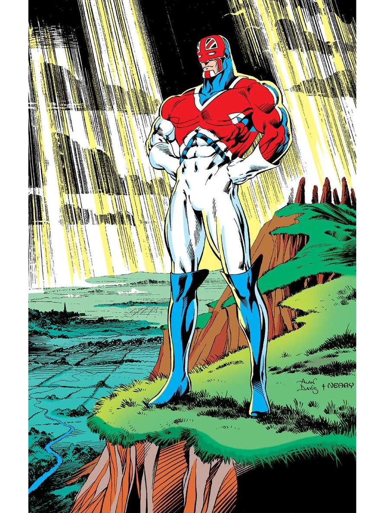 | 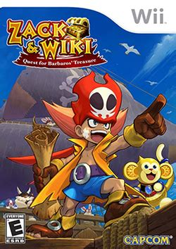 | 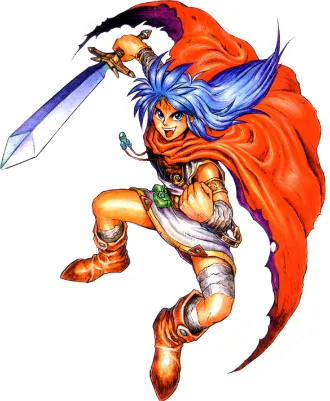 | 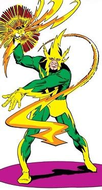 |
Explanation of Choices
It was trutfully difficult for me to come up with a tierlist for this. I had to put a lot of thought (maybe more thought than necessary) on what order I wanted these in. I also had to re-examine the rosters of previous MVC games to make sure I didn't accidentally include characters that have already made an appearance in the prior games. The other pain was making sure I found images that were Creative Commons or free to share and use. Didn't want to step on any legal toes. If you have any questions or input to offer, please go to the contact form. The link is in the navigation bar.